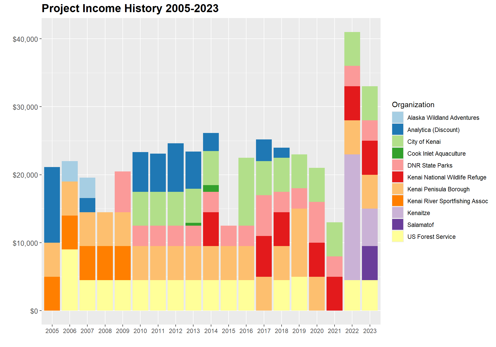
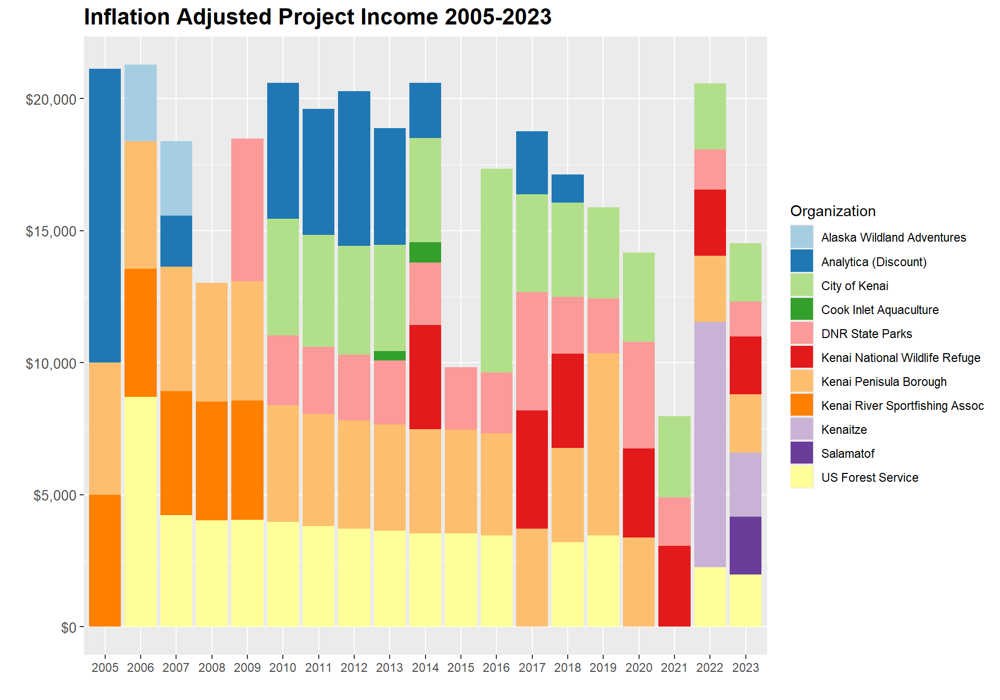

Appendix C — Project Financial History
Updated 2024-10-28, Benjamin Meyer, Kenai Watershed Forum (ben@kenaiwatershed.org)
D Summary
The Kenai River Baseline Water Quality Monitoring project1 is funded both direct as well as in-kind financial support from project partners.
Costs include contractual laboratory expenses, research staff personnel time, equipment, and other smaller expense categories. Partners are invoiced on an annual basis.
Since 2005, 56% inflation of the U.S. dollar has reduced the value of resources available to the project.
In order to continue Kenai River water quality monitoring efforts, the project must either seek additional sources of funding or de-prioritize certain sampling sites or parameters.
Read the Partner Request Letter Here [Writing In Progress 10/28/2024]
D.1 Inflation leads to declining project income
Since the year 2005, inflation of the US dollar has reduced it’s value by 56%2. Figure D.1 plots this trend from 2005 - 2023.
Adjusted for inflation, project income has seen a steady decline from 2005 - 2022. Figure D.2 displays project income history.
D.2 Income Detail
Project income history fluctuates annually as partner contributions vary. Figure D.3 displays annual cash contributions by individual partner organizations. Most partner organizations have continued to contribute a constant annual amount once the original agreement was established.
Note that in 2022, the project received a lump sum contribution from Kenaitze Indian Tribe that had been intended to be dispersed annually over years 2018 - 2022. Similar levels of annual contribution are not anticipated for future years. Additionally, in 2023 the project received a contribution from Salamatof Tribe via it’s IGAP3 program. As of 2024, the IGAP program is no longer active with Salamatof Tribe, thus further cash contributions are not anticipated.

With the atypical timing and receipt of funds from Kenaitze and Salamatof, the project saw increased income in 2022 and 2023; see Figure D.4. However as seen in Figure D.5, when adjusted for inflation, even these two high-income years are lower than typical total annual project income received through year 2014.



E Expenses History
Project expense trends from years 2005 - 2022 are detailed in figure Figure E.1 and source data is available in the link below the figure.
In general, laboratory analysis expenses and staff scientist time are the largest expense categories. In years where little to no staff time was is recorded for the project, staff were funded by similar related projects.
E.1 Recommendations
E.2 Source Data
All source data not linked at this page is available in the project GitHub repository at https://github.com/Kenai-Watershed-Forum/kenai-river-wqx